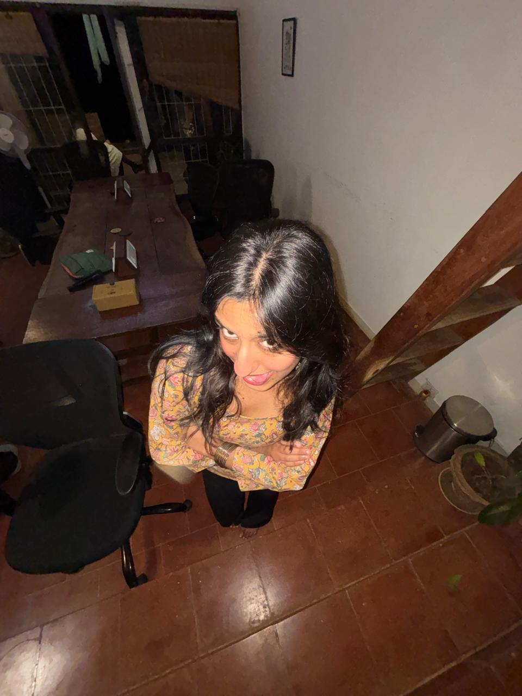
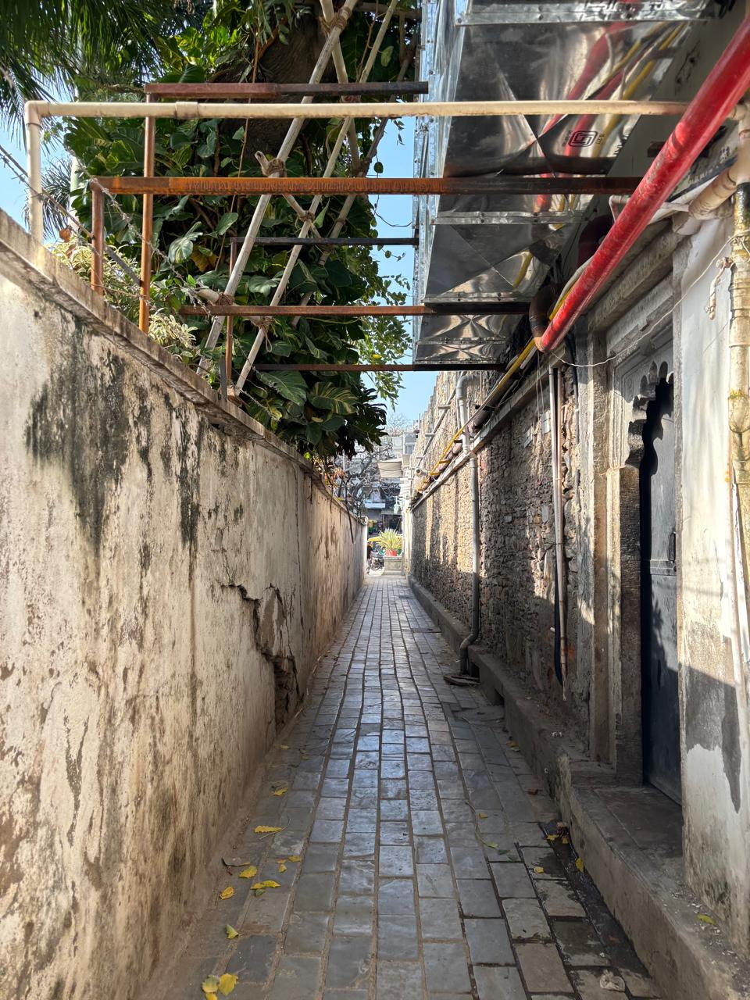
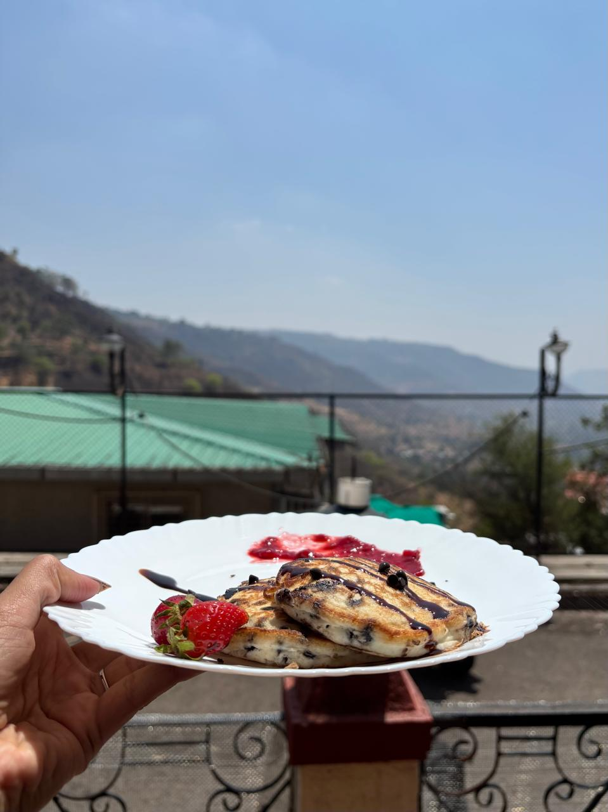
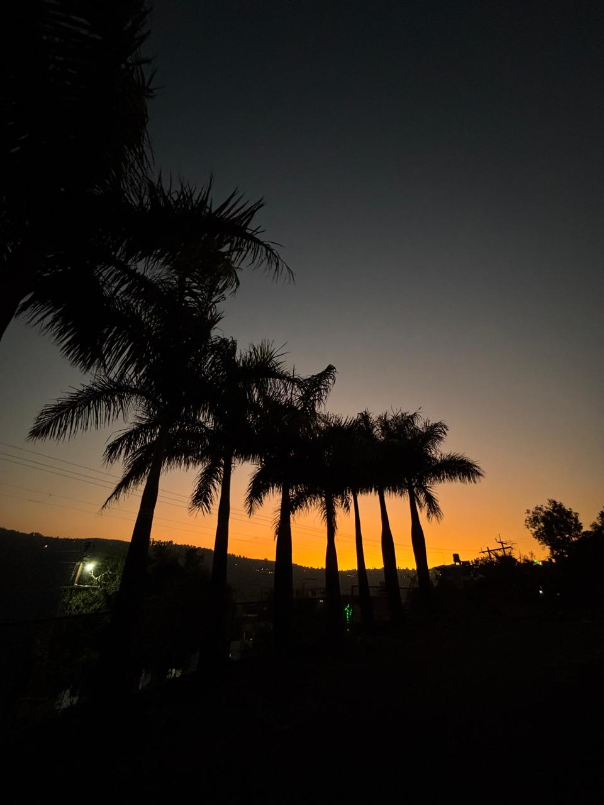
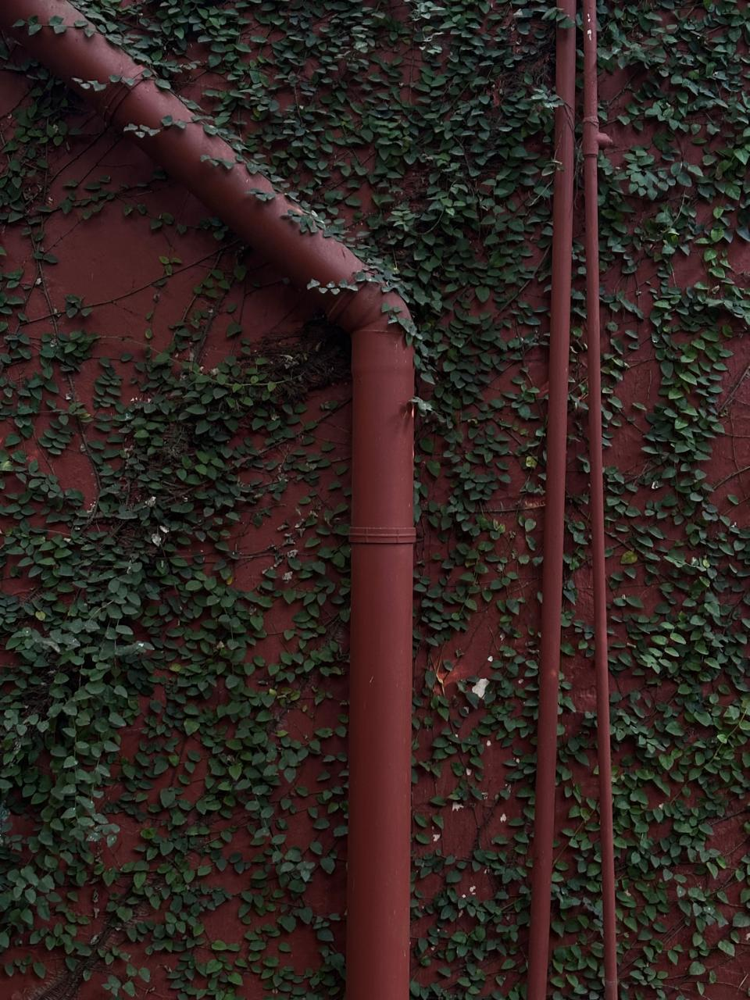
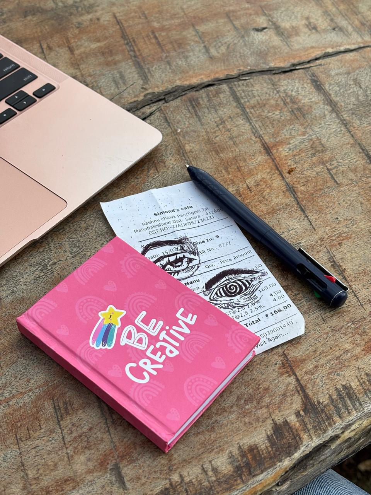
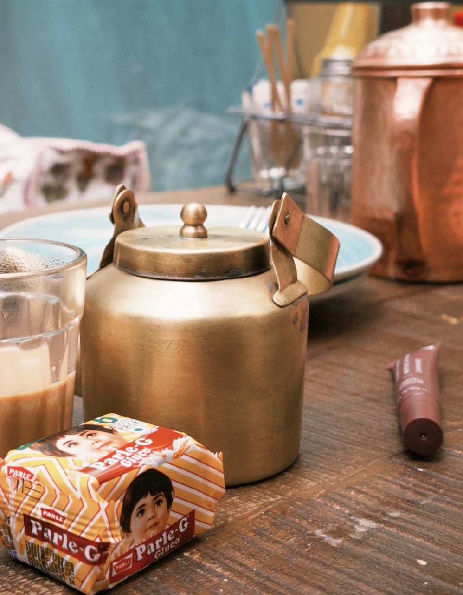
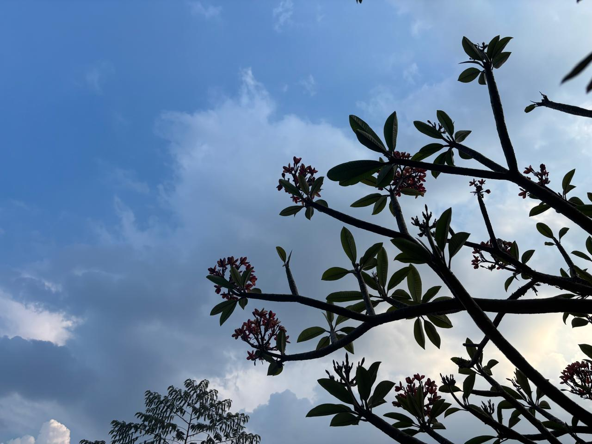
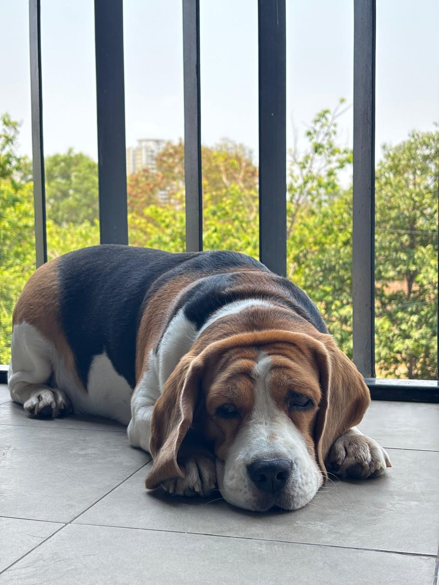
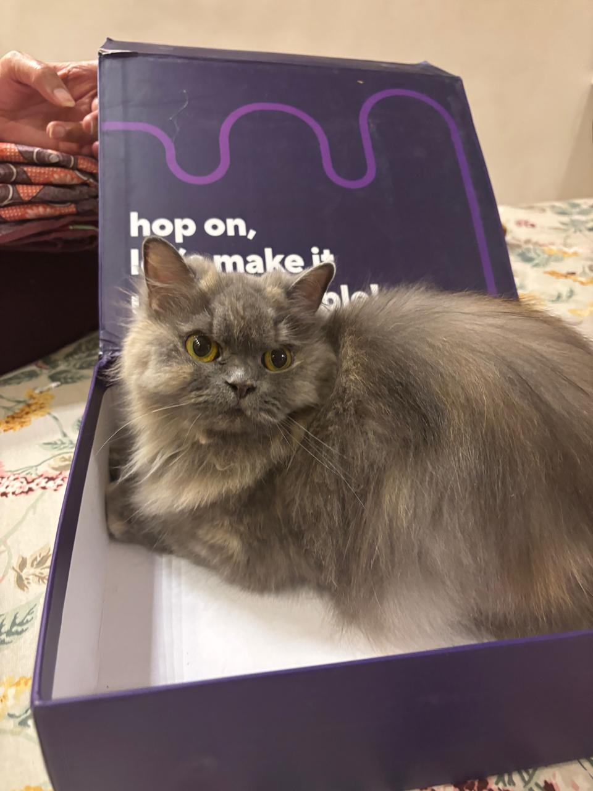

A little about me
Hi, I’m Khushi, a self-taught designer who enjoys exploring ideas and turning them into thoughtful visuals. When I’m not designing, you’ll probably find me taking photos or enjoying a cup of chai.
A few favourite photos
I love taking photos, so here are a few of my favourites.







My most photographed subjects
Meet my cat and dog. They didn’t exactly agree to the
photoshoots, but here we are.


Tools I work with
These are some of the tools I use to explore ideas and bring
my designs together.
Illustrator
Photoshop
Figma